SAFARI
Users
- Sodium Chloride Salts - Table, Kosher, Sea, etc.
- Other Simple Salts
- Complex Seasonings & Spice Mixes
- Food Additives
Sodium Chloride Salts
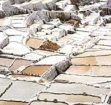 Sodium Chloride Salt is the most important of all seasonings. It is essential to flavor and essential to life itself. It can also be dangerous. Just how dangerous and how much of it is dangerous is very much a matter of controversy today. For its importance as a seasoning and for its effects on health we have given salt two pages of its own. Photo © i0050.Salt - Varieties and Uses.
Salt & Health.
Other Simple Salts
Baking Soda
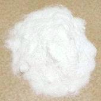 [Nahcolite (mineral form); Sodium bicarbonate, Bicarbonate of Soda, Saleratus (19th Century)]
The main use of Baking Soda is as a leavening agent in quick breads and the like. It reacts with acids in the dough, producing bubbles of Carbon Dioxide. The acid may be provided by lemon juice, yogurt, buttermilk, cocoa, vinegar, cream of tartar or phosphates. Without acid, some Carbon Dioxide will be released by thermal decomposition at temperatures above 180°F/80°C.
Baking soda was formerly used to make green vegetables greener, but
this is little done today as the color looks artificial and it damages
nutrition and flavor. Today, color is preserved by not overcooking.
Baking soda is often used to speed cooking of beans and in the traditional
British dish Mushy Peas. In some regions it is used to tenderize meat,
but all these cooking uses degrade nutrition. More usefully, it is used
in breading of fried foods to make the breading more porous so it is
not steamed off the food. Baking Soda has been tested in place of
Edible Potash in various Nigerian recipes and found to work just fine.
Baking Powder
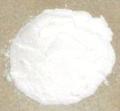
This mixture is used as a leavening agent for quick breads and baked
goods without enough gluten to hold bubbles long or where a fermented
taste is undesirable. It includes Sodium Bicarbonate (Baking Soda) and
an acid powder. Today most available is "Double Acting" with one acid
releasing at room temperature with moisture, the other releasing acid
with heat. The photo sample is made from Sodium Acid Pyrophosphate
(high temperature acid) Sodium Bicarbonate, Corn Starch (flow agent),
and Monocalcium Phosphate (low temperature acid). Baking Powders with
Sodium Aluminum Sulphate or Phosphate instead of Sodium Acid
Pyrophosphate are going out of style due to suspicion of Aluminum as
a neurotoxin and claims that some people can detect a metallic taste
in baked goods made with it.
Cream of Tartar
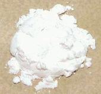 [Potassium bitartrate, potassium hydrogen tartrate]
This substance is a byproduct of wine making.It is used to stabilize
beaten egg whites and whipped cream, and to reduce discoloration in
boiled vegetables. It is also used to prevent crystallization of sugar
syrups and sometimes as an acid ingredient in Baking Powders.
Lime
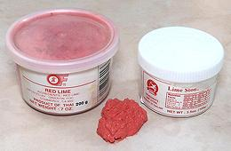 [Calcium Hydroxide, (Ca(OH)2)]
Lime is used in Thailand to produce crisper, longer lasting batters on
fruits and other deep fried items. It is also used in pickling, and has
long been so used in the West, but is no longer recommended.
Details and Cooking.
Complex Seasonings & Spice Mixes
Banga Soup Seasoning
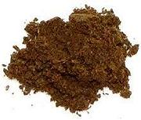
While this seasoning is necessary to make a traditional version of the
famous Banga Soup (Palm Fruit Soup) of the Nigerian Delta region, it is
all but impossible to make authentically in North America, so
commercially available mixes may have to be resorted to.
Banga Soup Seasoning.
Beef Bouillon Powder
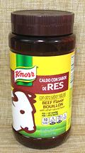
[Beef flavored broth mix]
This is the same as Bouillon Cubes, so you could use the same amount
of crushed cubes. Bouillon mixes of this sort are much used in regions of the world that
have inadequate refrigeration to hold stocks beyond the day made. A home
made beef stock is always the best substitute.
Details and Cooking.
Chicken Bouillon Powder
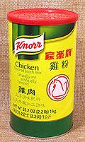
[Chicken flavored broth mix]
This is the same as Bouillon Cubes, so you could use the same amount of crushed cubes. East and Southeast Asian recipes depend a lot of chicken stock being continuously available, but that isn't always practical in this day when servants and stay at home cooks are increasingly scarce. This is particularly so for Southeast Asians now living in North America. This has made Chicken Powder an essential ingredient for cobbling up small amounts of stock quickly. Due to it's common availability it has also found use as a general seasoning.
Some of the Asian brands are entirely artificial, completely
unrelated to actual chickens, so might be of more interest to
vegetarians. It is a good idea to read the ingredients list before
purchasing.
Details and Cooking.
Vegeta
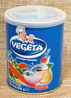 [Vegetable flavored broth mix]
This is the best known and most widely distributed Vegetable Seasoning,
It is marketed as an "All Purpose Seasoning", useful as a rub for all
meats, fish, and poultry, but also for soups, stews, stir fries,
casseroles and vegetable dishes. It is particularly useful to
non-vegetarians when they have to produce a vegetarian soup or stew,
don't have vegetable stock on hand and are pressed for time.
Details and Cooking.
Curry Powders
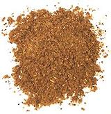 These are an Anglo-Indian invention. The British adopted Curry Powder in order to have something similar to the flavors of India conveniently at hand. In India, separate spices would be added differently to each dish rather than a standard mix. The Anglo-Indian "Madras Curry Powder" has been introduced to North America and the former British colonies in Sub-Saharan Africa. Sun Brand and Ship Brand are well known and of good quality.
There is no official recipe, so different brands vary tremendously
in taste and quality. Different regions have come up with their own
formulas. Here we have recipes of examples typical to several
regions:
Madras Curry Powder
Jamaican Curry Powder
West African Curry Powder
Singapore Curry Powder
Garam Masala
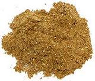 Here we have a spice mix that actually is ground and mixed ahead in India, but it's not commercial - every household has its own formula. Unlike curry spices, Garam Masala is not a base flavoring, but more of an aromatic finishing seasoning applied in the last stages of cooking. It varies considerably from on region of India to another. Here we have recipes of examples typical to several regions:
Garam Masala #1 - Northwest India
Kashmir Garam Masala - Kashmir - India & Pakistan
Bengali Garam Masala - Northeast India, Bangladesh
Tamal Nadu Garam Masala - Southeast India
Maggi® Seasoning
 [Jugo (Mexico), Maggi Würze (Germany)]
[Jugo (Mexico), Maggi Würze (Germany)]
This important seasoning was originally manufactured in Switzerland. It has found a worldwide market. and you will find it called for in many recipes, especially from Southeast Asia, where it is also a table condiment. Its bottle and trade dress are widely imitated by Asian knock-offs. It is also very popular in Central Europe and Mexico.
Maggi is similar to soy sauce, but formulated to be more of a meat
broth analog. It is used in soups, stews and sauces, but also in salad
dressings and vegetable dressings. The brand is now owned by Nestlé,
and is distributed in North America by Nestlé USA.
Details and Cooking.
Maggi® Cubes - African
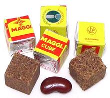
You will find Maggi Cubes called for in almost every West African recipe
composed in recent times. These cubes are used incessantly in both
restaurants and homes - except in regions too poor to afford them. They
have almost completely replaced the traditional flavorings of Ogeri
(fermented sesame seeds) and Sumbala / Dawadawa (fermented locust bean
seeds). While convenience is a major issue here, another major issue
is the increasing difficulty of obtaining the locust bean seeds needed
for Sumbala, and their ever increasing cost. Additionally, there is
Nestlé's ubiquitous and brightly colored advertising of the
product.
Details and Cooking.
Food Aditives
MSG
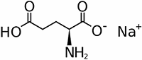 [Monosodium Glutamate, Sodium Glutamate, Additive E621, Ajinomoto, Vetsin, Accent]
This highly controversial white crystalline powder is rapidly increasing in use, particularly in processed foods. The reason for this is simple, it enhances flavors. Processed foods are loaded with salt and spiked with MSG to cover their lack of natural flavor.
First identified in seaweed, glutamate exists in many natural foods,
including mushrooms and some vegetables.
Formerly made from wheat, it is now industrially produced by bacterial
fermentation of carbohydrates, and is celiac safe. It's safety in other
respects has been strongly attacked and just as strongly defended. See
our page MSG & Health.
Diagram by Benrr101 contributed to the public domain.
Potash, Edible
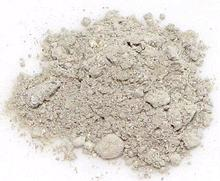 [Natron; Akanwu, Akaun (Igbo); Kanwa (Hausa); Hydrated Sodium Carbonate (with other salts)]
This substance is mineral salts gathered from dry salt beds in arid regions. Color will vary by region. It is used in cooking, particularly in Africa, to shorten the cooking time of beans, to emulsify Red Palm Oil with water, to make recipes with Okra more slimy (yes, they want that in Africa), and to make green vegetables more green.
Potash has been shown to reduce the amount of protein in foods it is
cooked with. Some of the other substances found in natural Potash may
be toxic, but used occasionally in recipe quantities it is considered
safe. It should not be consumed by pregnant women as it has been shown
to cause early stage abortions.
Subst: Baking Soda (not baking powder) has been tested
in various Nigerian recipes and found to work just fine.